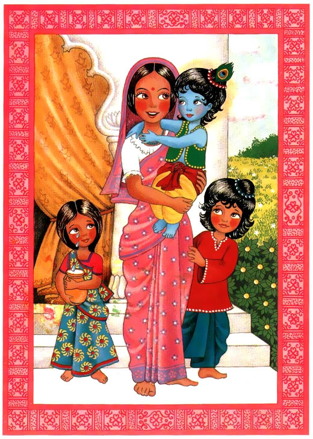

Cuando Indra se fue, Gopal regreso al pueblo de Vrindavan con su hermano Balaram. Balaram le pregunto: “¿Como hisiste para sostener esa montaña durante tanto tiempo?” Tomando un ternerito entres sus brazos Gopal dijo: “Tu sabes quien soy yo.”
“Que quieres decir?” Dijo Balaram. “Yo soy el Señor de todo, pero no le digas a nadie.” Dijo Gopal.
“Esta bien, yo guardare tu secreto. Lo que si se es que tu eres mi hermano menor, el hijo de Yashoda y Nanda Maharaj.” Dijo Balaram sonriendo.